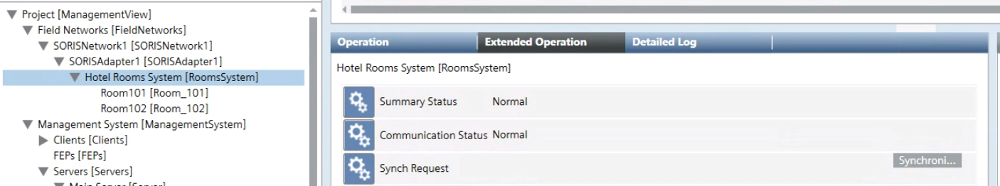

Re-synchronizing Hotel Rooms System Data
In case a re-synchronization is required to align the Desigo CC database, do the following:
- Select Project > Field Networks > [SORIS network] > [FIAS adapter] > Hotel Rooms System.
- In the Extended Operation tab, the Communication Status property indicates
Normal. - Next to the Synch Request property, click Synchronization.
- The synchronization request between the FIAS adapter and the hotel management application start in order to align also the Desigo CC database. System Browser refreshes and displays any booked rooms under Hotel Rooms System.
